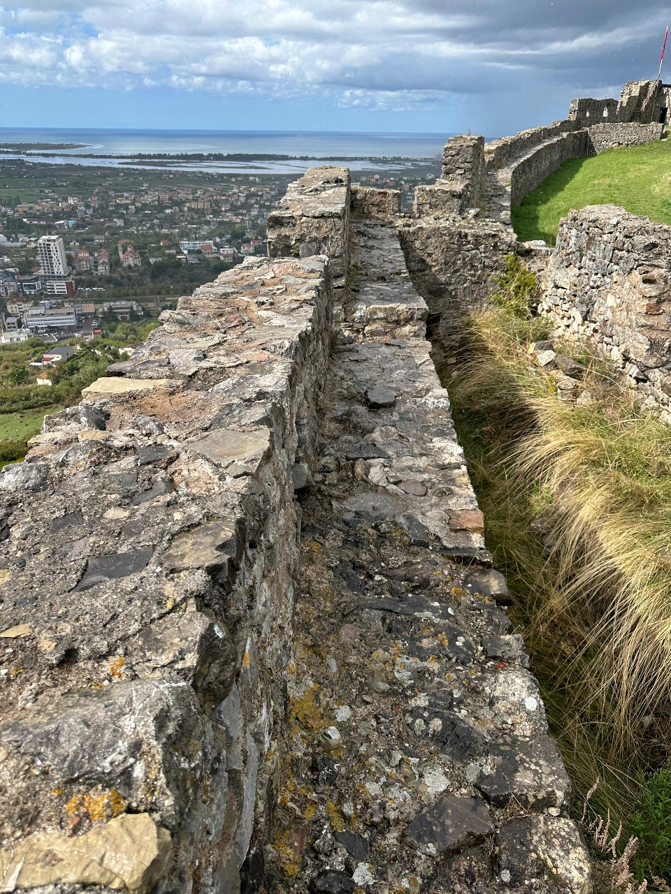
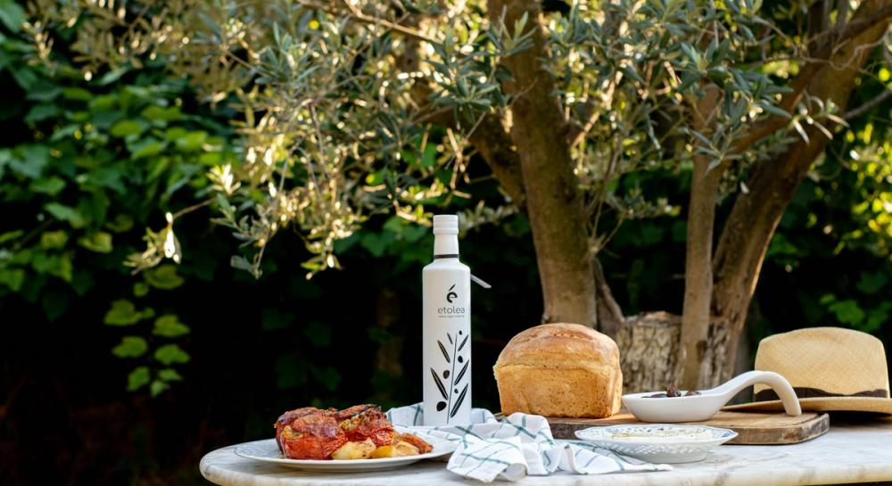

TRASHËGIMI HISTORIKE
Kalaja e Lezhës
Një pikë vështrimi mbi qytetin dhe peizazhin përreth. Muret dhe strukturat e saj dëshmojnë periudha të ndryshme të historisë së Lezhës.
Zbulo vendinNga muret e lashta të Kalasë te peizazhi i Kune-Vainit, zbulo Lezhën nëpërmjet vendeve, rrëfimeve dhe hartave ndërvepruese.
Njih historinë e qytetit përmes pikave të tij më të rëndësishme dhe peizazheve që e rrethojnë.
Një pikë vështrimi mbi qytetin dhe peizazhin përreth. Muret dhe strukturat e saj dëshmojnë periudha të ndryshme të historisë së Lezhës.
Zbulo vendin
Fortifikimi i hershëm në lartësinë e Malit të Shëlbuemit, i lidhur me peizazhin arkeologjik të Lissusit.
Zbulo vendin
Një vend kujtese në zemër të qytetit, i lidhur me historinë e Gjergj Kastriotit dhe Lezhës.
Zbulo vendin
Një peizazh ligatinor pranë detit, i njohur për habitatet dhe vëzhgimin e shpendëve.
Zbulo vendinPamje nga Kalaja, Akrolisi, Vendvarrimi i Skënderbeut dhe Kune–Vaini. Përzgjidh një fotografi për ta parë më të madhe.

Lezha ruan gjurmë të qytetit antik Lissus dhe të fortifikimeve që kanë ndryshuar në periudha të ndryshme. Pozicioni pranë Drinit dhe lidhja me bregdetin e kanë bërë vendin një pikë të rëndësishme të peizazhit historik.
Më 2 mars 1444 në Lezhë u mbajt Kuvendi i Lezhës, ku princat shqiptarë u bashkuan nën drejtimin e Gjergj Kastriotit. Ai u varros në Lezhë më 1468. Memoriali i sotëm u ndërtua në vitin 1981 mbi zonën e kishës së Shën Kollit.
Teksti historik është përgatitur për shqyrtim shkencor nga Paulin Zefi.
Tre zona që ndihmojnë të lexohet zhvillimi i vendbanimit dhe sistemi i fortifikimit në raport me terrenin.
Fortifikim i hershëm në Malin e Shëlbuemit. Gjurmët e mureve dhe relievi kërkojnë lexim të lidhur me vrojtimet dhe dokumentimin arkeologjik.
Fortifikimet e pjesës së sipërme mbajnë dëshmi të periudhave të ndryshme. Fotogrametria dhe LiDAR-i ndihmojnë dokumentimin e mureve e të terrenit.
Zona përreth Vendvarrimit lidhet me shtrirjen e qytetit antik. Prospektimet gjeoelektrike kanë evidentuar anomali që kërkojnë vlerësim me gërmime.
Burime: Bashkia Lezhë · Studimi i projektit HDZA Lezha. Përshkrimet historike janë për shqyrtim nga Paulin Zefi.
Harta 2D, skena 3D dhe rrëfimi interaktiv të çojnë nga një vend te tjetri dhe të ndihmojnë të kuptosh si lidhen me qytetin.
Dokumentimi bashkon të dhëna nga terreni, modelet 3D, prospektimi gjeofizik dhe paraqitja Web GIS. Interpretimet arkeologjike lidhen me burimet e botuara.
Fotogrametria dhe LiDAR-i u përdorën për të dokumentuar relievin, muret dhe strukturat. Nga përpunimi u përftuan modele digjitale të terrenit dhe pamje 3D për analizë e paraqitje.
Lexo studiminPranë Vendvarrimit të Skënderbeut dhe Kalasë së Sipërme u kryen matje gjeoelektrike. Hartat e rezistivitetit në thellësi të ndryshme treguan anomali me interes për kërkimin arkeologjik.
Anomalia nuk konfirmon vetë një mur ose objekt; kërkohen verifikime arkeologjike në terren.
Metoda dhe rezultatetHartat e vjetra, matjet në terren dhe shtresat tematike u organizuan në GIS. Map Tour, skena 3D, Atlasi dhe StoryMap-i e bëjnë këtë dokumentim të konsultueshëm.
Hap aplikacionetKapitulli mbi Akrolisin dhe Lissusin përshkruan matjet, përpunimin dhe prospektimin; videot më poshtë paraqesin modelet 3D të Kalasë dhe Akrolisit.
Shiko dokumentimin digjital të Kalasë së Lezhës dhe Akrolisit, drejtpërdrejt këtu.
Peizazhi i Lezhës lidhet me prodhimet e tokës, bregdetit dhe vreshtave. Në Fishtë njihen përvojat e agroturizmit me produkte sezonale; në Shëngjin gatimet e peshkut dhe prodhimet e detit; në Kallmet tradita e verës vendase.
Zbulo përvojat kulinarePërshkrimi mbështetet në portalin turistik të lidhur nga Bashkia Lezhë; faqja e vjetër WordPress nuk ka përmbajtje te rubrika “Kulinari”.

Projekti “Hartografimi dhe Dokumentimi i Zonave me Potencial Arkeologjik të Lezhës (Lissus)” bashkon kërkimin shkencor dhe institucionet lokale.
Lista e institucioneve zbatuese dhe financuesi: falënderimet e botimit shkencor të projektit.
Nis eksplorimin nga destinacionet, ose hape hartën për t’i parë në kontekstin e qytetit.
Rruga e Kalasë, Lezhë, Shqipëri
Vizito faqen origjinale